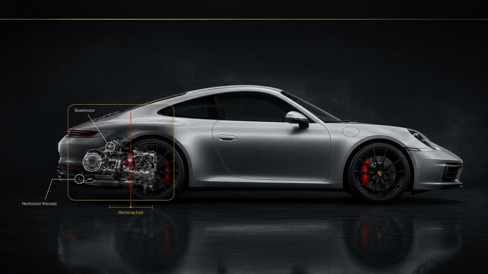

Der Porsche 911 steht seit Jahrzehnten für eine ganz eigene Philosophie: der
Motor sitzt hinten, angetrieben werden die Hinterräder (oder alle vier), und
jede Generation verfeinert dieses Grundkonzept mit neuer Technik, ohne die
ursprüngliche Idee zu verraten. Diese Seite zeigt die wichtigsten technischen
Bausteine, die den 911 zu dem machen, was er ist.
Technikbereiche
Vier Bereiche, die zusammen das Fahrerlebnis eines 911 ausmachen.

Boxermotor im Heck
Kennzeichnend für den 911 ist der Boxermotor, der hinter der Hinterachse
sitzt. Die gegenüberliegend angeordneten Zylinder sorgen für einen
niedrigen Schwerpunkt und einen unverwechselbaren Klang.
Bauart: Sechszylinder-Boxer, meist mit Turboaufladung
Getriebe: Doppelkupplungsgetriebe (PDK) oder Handschaltung
Antrieb: Heckantrieb (Carrera) oder Allradantrieb (Carrera 4)
Fahrwerk & Bremsen
Adaptive Dämpfersysteme passen die Fahrwerksabstimmung in Echtzeit an
Fahrbahn und Fahrstil an. Große, innenbelüftete Bremsscheiben sorgen für
verlässliche Verzögerung auch bei hohem Tempo.
PASM: adaptive Dämpferregelung, wählbar zwischen Komfort und Sport
Hinterachslenkung: mehr Agilität in der Stadt, mehr Stabilität bei Tempo
Ein ausfahrbarer Heckspoiler erzeugt bei hohem Tempo zusätzlichen
Anpressdruck, während er im Alltag flach anliegt und den
Luftwiderstand gering hält. Aktive Kühlluftklappen regeln zudem, wie
viel Luft für die Kühlung benötigt wird.
Heckspoiler: geschwindigkeitsabhängig ausfahrbar
Luftklappen: aktiv geregelt für Kühlung und Effizienz
Unterboden: weitgehend verkleidet für einen sauberen Luftstrom
Interieur & Assistenzsysteme
Ein digitales Kombiinstrument, ein zentrales Touch-Display und eine
wachsende Zahl an Assistenzsystemen verbinden klassisches Fahrgefühl
mit moderner Alltagstauglichkeit.
Sport Chrono Paket: zusätzliche Fahrmodi und Rundenzeitmessung
Fahrassistenten: Abstandsregeltempostat, Spurhalte- und Notbremsassistent
Cockpit: digitale Anzeigen kombiniert mit klassisch mittigem Drehzahlmesser
Technische Daten
Beispielhafte offizielle Orientierungswerte aktueller 911-Carrera-Modelle.
Die Werte dienen im Schulprojekt zur Einordnung und können je nach Markt,
Ausstattung und Modelljahr abweichen.
911 Carrera
290 kW / 394 PS, 0–100 km/h in ca. 3,9 s mit Sport Chrono, ca. 294 km/h Höchstgeschwindigkeit
911 Carrera S
353 kW / 480 PS, 0–100 km/h in ca. 3,3 s mit Sport Chrono, ca. 308 km/h Höchstgeschwindigkeit
Motorprinzip
Sechszylinder-Boxermotor im Heckbereich, je nach Modell mit Turboaufladung oder besonderer Sportauslegung
Getriebe
PDK-Doppelkupplungsgetriebe oder modellabhängig Handschaltung
Antrieb
Heckantrieb oder Allradantrieb je nach Modellvariante
Hinweis
Keine Kaufberatung, sondern eine technische Erklärung für ein inoffizielles Schulprojekt.
System statt Einzelteil
Vom Fahrerwunsch zur kontrollierten Bewegung
Die technische Qualität entsteht erst, wenn alle Baugruppen in derselben Situation zusammenarbeiten.
1. Eingabe
Lenkung, Bremse und Gaspedal übersetzen den Fahrerwunsch in Signale.
2. Leistung
Motor und Getriebe stellen die passende Kraft bereit und dosieren sie.
3. Kontrolle
Fahrwerk, Bremsen und Regelsysteme stabilisieren das Fahrzeug.
4. Rückmeldung
Lenkung, Sitz und Anzeigen vermitteln dem Fahrer, was das Auto gerade macht.
Einfach erklärt
Warum diese Technik zusammenarbeitet
Ein Sportwagen besteht nicht nur aus Motorleistung. Entscheidend ist, wie
Motor, Getriebe, Fahrwerk, Bremsen und Aerodynamik zusammenspielen.
Leistung
Der Motor liefert Kraft und Beschleunigung. Beim 911 ist der Boxermotor ein wichtiges Erkennungsmerkmal.
Übertragung
Getriebe und Antrieb bringen die Leistung kontrolliert auf die Straße.
Kontrolle
Fahrwerk, Bremsen und Assistenzsysteme helfen, das Auto präzise und sicher zu bewegen.
Stabilität
Aerodynamik und Karosserieform unterstützen Fahrverhalten, Kühlung und hohe Geschwindigkeiten.
Engineering-Prinzipien
Was gute Sportwagentechnik leisten muss
Vorhersehbar
Reaktionen müssen für den Fahrer verständlich und wiederholbar sein, nicht nur spektakulär.
Belastbar
Bremsen, Kühlung und Antrieb müssen auch bei wiederholter Belastung zuverlässig arbeiten.
Abgestimmt
Mehr Leistung ist nur sinnvoll, wenn Reifen, Fahrwerk, Aerodynamik und Bremsen dazu passen.
Interaktives Systemverständnis
911 Engineering Lab
Wähle eine Fahrsituation und beobachte, wie Antrieb, Fahrwerk, Aerodynamik, Bremsen und Rückmeldung gemeinsam reagieren. Das Modul zeigt bewusst Zusammenhänge statt isolierter Einzelwerte.
Ausgewogene Abstimmung
Entspannt und direkt im Alltag
Im normalen Straßenbetrieb arbeiten die Systeme zurückhaltend. Der Antrieb reagiert weich, das Fahrwerk filtert Unebenheiten und die Aerodynamik priorisiert Effizienz.
SystemzielKomfort, Effizienz und klare Rückmeldung
911ROAD
AntriebFahrwerkAeroBremse
Antriebharmonisch
Sanfte Gasannahme und frühe, komfortorientierte Gangwechsel.
Fahrwerkkomfortabel
Adaptive Dämpfung hält die Karosserie ruhig und lässt Restkomfort zu.
Aerodynamikeffizient
Luftführung und Kühlung arbeiten bedarfsgerecht mit geringerem Widerstand.
Bremsen & Stabilitätvorausschauend
Regelsysteme bleiben im Hintergrund und greifen erst bei Bedarf ein.
Beim aktuellen 911 Carrera GTS T-Hybrid verbindet Porsche einen neu entwickelten 3,6-Liter-Boxermotor mit einem elektrisch unterstützten Turbolader, einer Hochvoltbatterie und einem Elektromotor im verstärkten PDK. Ziel ist nicht elektrisches Fahren als Selbstzweck, sondern ein schnelleres Ansprechen und zusätzliche Systemleistung.
eTurbo
Schneller Ladedruck
Ein Elektromotor im Abgasturbolader kann das Verdichterrad unabhängig vom Abgasstrom beschleunigen. Dadurch steht Ladedruck schneller zur Verfügung.
PDK
Elektrischer Zusatzschub
Der im Getriebe integrierte Elektromotor unterstützt den Antrieb direkt und kann Energie zurückgewinnen. Mechanik und Elektronik arbeiten als ein System.
Aero
Bedarfsgerechte Luftführung
Aktive Kühlluftklappen und adaptive Elemente steuern Luftwiderstand, Kühlung und Stabilität situationsabhängig statt mit einer starren Einstellung.
Fachliche Grundlage: offizielle Porsche-Presseinformationen zum 911 Carrera GTS T-Hybrid und zur aktiven Aerodynamik. Werte und Ausstattung können je nach Modell und Markt abweichen.